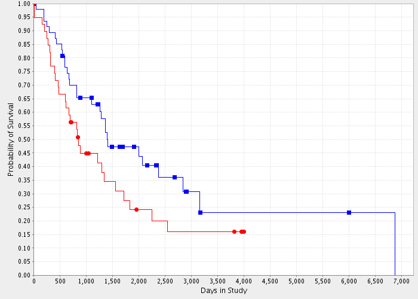

Kaplan Meier Survival Plot for Astrocytoma vs. Oligodendroglioma
|
Astrocytoma (25 patients)
•
censored (3 patients)
|
Oligodendroglioma (19 patients)
•
censored (4 patients)
Log-rank P-value for significance of difference in survival between groups
Astrocytoma vs. Oligodendroglioma 0.0431